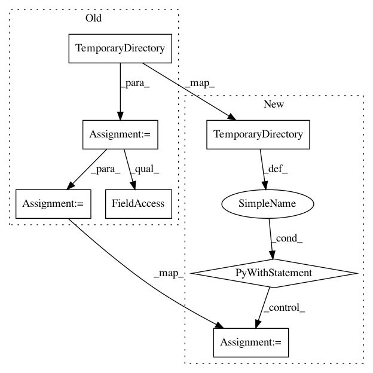

4331fd73f0864d21c366a24c0105c8bd3555189b,tests/test_networkml.py,,test_networkml_test_randomforest,#,93
Before Change
def test_networkml_test_randomforest():
os.environ["POSEIDON_PUBLIC_SESSIONS"] = ""
tempdir = tempfile.TemporaryDirectory()
savew = os.path.join(tempdir.name, "not.used")
netml = run_networkml(
["-p", "tests/", "-o", "test", "-a", "randomforest"],
savew=savew,
model="networkml/trained_models/randomforest/RandomForestModel.pkl")
After Change
def test_networkml_test_randomforest():
os.environ["POSEIDON_PUBLIC_SESSIONS"] = ""
with tempfile.TemporaryDirectory() as tempdir:
savew = os.path.join(tempdir, "not.used")
netml = run_networkml(
["-p", "tests/", "-o", "test", "-a", "randomforest"],
savew=savew,
model="networkml/trained_models/randomforest/RandomForestModel.pkl")
assert netml.model.feature_list
In pattern: SUPERPATTERN
Frequency: 3
Non-data size: 7
Instances
Project Name: CyberReboot/NetworkML
Commit Name: 4331fd73f0864d21c366a24c0105c8bd3555189b
Time: 2019-12-16
Author: josh@vandervecken.com
File Name: tests/test_networkml.py
Class Name:
Method Name: test_networkml_test_randomforest
Project Name: CyberReboot/NetworkML
Commit Name: 4331fd73f0864d21c366a24c0105c8bd3555189b
Time: 2019-12-16
Author: josh@vandervecken.com
File Name: tests/test_networkml.py
Class Name:
Method Name: test_networkml_train_onelayer
Project Name: CyberReboot/NetworkML
Commit Name: 4331fd73f0864d21c366a24c0105c8bd3555189b
Time: 2019-12-16
Author: josh@vandervecken.com
File Name: tests/test_networkml.py
Class Name:
Method Name: test_networkml_train_sos